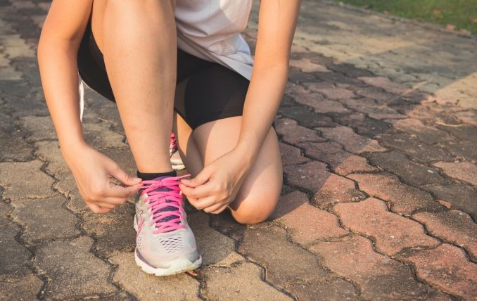
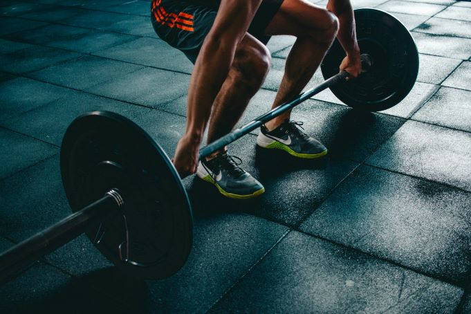

Lo que parecía algo raro se ha ido convirtiendo cada vez en más habitual. Esa es la situación que precedía a las deportistas de alto nivel con sus embarazos, que parecía destinada a aquellas que cada vez veían sus retiradas más cercanas. Sin embargo, esa dinámica ha cambiado radicalmente en los últimos meses.
La última en unirse al club de las embarazadas ha sido Naomi Osaka. La tenista anunció hace escasos días su futura maternidad a través de un comunicado en las redes sociales, por lo que apartaba su carrera al más alto nivel hasta 2024, para dedicarse este año en exclusiva a su futuro hijo
No ha sido la única en anunciar en estos días su dedicación a la maternidad, pues Maria Pry, segunda entrenadora del Madrid CFF, también daba a conocer que se iba a coger la baja para cuidar de sus tres mellizos. Tras dar a luz su pareja el pasado mes de diciembre, la técnica ha decidido poner un punto y seguido a su carrera en los banquillos
Sin embargo, hasta hace poco, esta situación era completamente distinta. Muchas de las deportistas optaban por dar a la luz una vez terminasen sus carreras y que así no interfiriesen en su rendimiento, ya fuese sobre los terrenos de juego, las pistas o desde los banquillos como así ha ocurrido recientemente.
En el fútbol, por ejemplo, hasta hace pocos años muchos clubes imponían cláusulas anti-embarazo a sus futbolistas. Por suerte, esa dinámica ha cambiado y cada vez más dan rienda suelta a su instinto maternal durante sus carreras deportivas sin importarle lo que pueda ocurrir en sus respectivos equipos.
Tanto Maria Pry como Naomi Osaka han seguido el camino de otras deportistas que abrieron el camino y fueron llevando a la normalidad los embarazos. Ambas han decidido poner en stanby sus carreras para dedicarse a la maternidad. Y lo han hecho de dos modos diferentes, ya que la entrenadora se acogió a la baja de paternidad para cuidar de sus prematuros hijos y la tenista lo hizo para dedicarse en exclusiva a su embarazo.
"Ahora, nos quedan unos meses duros, pero a la vez super bonitos, por las experiencias y emociones, que estoy convencida que vamos a vivir con ellos. Y en toda esta montaña rusa de emociones, sin lugar a duda me quedo con el día 5 de enero del 2023 que pudimos hacer piel con piel con ellos, por fin los tocamos, por fin los tuvimos con nosotras, por fin los sentimos…", expresaba la entrenadora en sus redes sociales tras conocerse la noticia del nacimiento de sus niños.
"Estos últimos meses lejos del deporte realmente me han dado un nuevo amor y aprecio por el deporte al que he dedicado mi vida. Me doy cuenta de que la vida es muy corta y no doy ningún momento por sentado, cada día es una nueva bendición y aventura", resaltaba Osaka cuando daba a conocer su embarazo. Y con ello, llegó la verdadera revelación de su baja en el Open de Australia y el resto de la temporada.
Poco a poco, las mujeres van adquiriendo el hábito de ser madres en sus carreras profesionales. En nuestro fútbol, también hay ejemplos recientes como el de Marta Corredera. La futbolista del Real Madrid anunció el pasado enero de 2022 que estaba embarazada tras no ir varios partidos convocada con el conjunto merengue.
Tras su experiencia como madre, Corredera volvió a la disciplina del Real Madrid sin mayores problemas. La jugadora se convirtió en la segunda futbolista profesional en España en cogerse la baja por embarazo, algo que ya empieza a ser poco a poco más habitual.
Otras también se encuentran en el proceso, como es el caso de la medallista olímpica española Ana Peleteiro. La triple saltadora también se está completamente inmersa en ampliar su familia y, tras centrarse en su embarazo, ya se ha puesto como objetivo los Juegos Olímpicos de París 2024
Sin embargo, siempre hubo una primera vez para todo. Con lo especialmente conflictivo que se han mostrado los embarazos históricamente en el mundo del deporte, ha habido grandes estrellas que han roto con ello. Algunas de ellas, han sido o siguen siendo referentes, como es el caso de Alex Morgan en el fútbol o de Serena Williams en el tenis.
Ambas fueron capaces de compaginar sus carreras al más alto nivel con ser madres. La jugadora estadounidense fue la primer en dar visibilidad en el mundo del balompié en 2020 y la ganadora de 23 Grand Slams lo hizo en el tenis. Ambas abrieron el camino a muchas otras y esos frutos se están recogiendo ahora.
El gran ejemplo dentro del deporte español está en María de Alharilla. La futbolista del Levante UD en 2021 anunció su embarazo y se convertía en la primera jugadora de Primera División en ser madre. Tras favorecerse del convenio colectivo firmado en ese momento por la Liga F, decidió dar el paso adelante
En categorías inferiores, en la Segunda División, también está el caso de Maider Irisarri. La exfutbolista tuvo en 2019 a su hijo cuando militaba en las filas del Osasuna y fue ampliamente apoyada por su club para tenerlo. Una experiencia que abrió el camino para que las siguientes en los años posteriores.
También hay casos como el de la triple medallista olímpica Maialen Chourraut, que se aventuró a tener a su hija en 2013, poco después de lograr en Londres 2012 su primera presea para España. Y eso para nada le impidió tener un gran rendimiento en el deporte, puesto que logro otras dos en los dos siguientes Juegos.